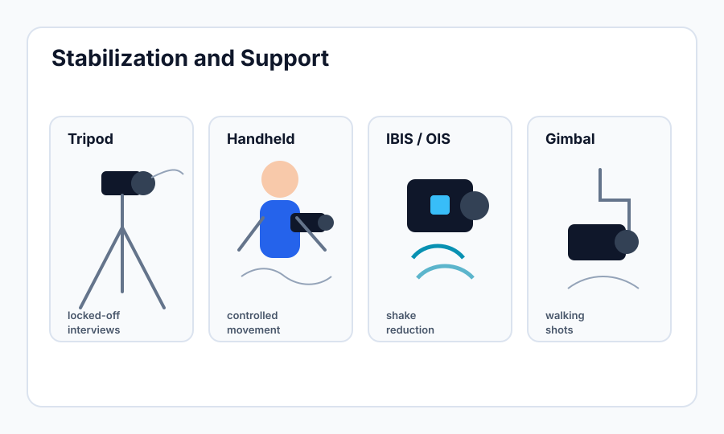

Stabilization and Support
Learning Objectives
- Set up and use a fluid head tripod correctly for professional video production.
- Apply proper handheld technique to minimize camera shake.
- Understand the differences between IBIS, OIS, and electronic stabilization.
- Know when a gimbal adds value and when it adds complexity without benefit.
- Make deliberate decisions about camera movement rather than using movement by default.
Stability as a Professional Standard
Shaky, unstable footage is one of the clearest signals of an inexperienced camera operator. A stationary interview shot that wobbles, a wide shot that drifts and trembles, a walking shot that bounces with every step — these issues are not easily fixed in post-production and they undermine the credibility and watchability of the finished piece. Stability is not just a technical matter; it communicates professionalism and allows the viewer to focus on the content rather than the camera work.
The goal is not to eliminate all camera movement — deliberate movement can be powerful. The goal is to control movement so that every motion in the frame is intentional, not accidental.

Tripod Selection and Use
A tripod is the most important piece of support equipment for video production. Unlike photography tripods, which only need to hold the camera still in one position, video tripods must allow smooth panning (horizontal rotation) and tilting (vertical rotation) while recording. This requires a fluid head — a tripod head that uses viscous fluid to create resistance and damping in the pan and tilt axes. A fluid head makes camera movements slow, smooth, and controllable rather than jerky and mechanical.
Look for a fluid head with adjustable drag controls on both the pan and tilt axes. Higher drag settings make movements slower and more stable for wide shots where any vibration is highly visible. Lower drag settings allow faster movements for following action. You will also find a counterbalance system — springs or fluid chambers — that compensates for the weight of the camera and lens so the head floats in a neutral position without tilting forward or back under the weight of the rig.
Setting Up the Tripod
Spread the legs far enough that the tripod is stable — a narrow stance topples easily. On uneven ground, extend each leg independently to level the head rather than relying on the center column. Most professional fluid heads have a bubble level on the head itself — use it. A level camera is not just about aesthetics; a tilted camera makes all horizontal pan movements appear diagonal, which looks wrong immediately to any viewer.
The center column should generally stay at its lowest position. Extending the center column raises the camera by raising a single pole with no lateral support, which makes the entire rig far more susceptible to vibration and wobble. Use the leg extension instead. Only use the center column when you need height that the legs alone cannot provide.
After setting up the tripod, push gently on the camera from the side and then release. Watch if the image settles quickly or continues to oscillate. If it continues to swing, the drag is too low or the counterbalance is not set correctly. Adjust both until a gentle push produces only a momentary, quickly-damped movement.
Tripod Best Practices
Lock all leg joints that are extended — a partially locked leg joint is a failure point that will slip at the worst moment. Tighten the pan and tilt locks when the camera is not in use to prevent the head from flopping. When locking the pan or tilt for a static shot, engage the lock, then check that the camera has not shifted from your intended frame during the locking action — a slight bump during lock is common and annoying. When carrying a mounted tripod, hold it by the center column with the camera facing forward rather than swinging it from a leg, which risks the head catching on something and sending the camera into the ground.
Handheld Shooting
Handheld shooting creates a different visual language from tripod work — a subtle energy and presence that puts the viewer in the scene. But untrained handheld looks like nervous footage rather than intentional documentary style. The difference is technique.
Proper handheld grip for video: right hand grips the body firmly with the index finger over the record area, right elbow tucked tightly against the ribs. Left hand cradles the lens from below, with the left elbow also tucked in — both elbows form a triangular support against your torso. Your body becomes a shock absorber. Slightly bend your knees and keep your weight centered. Breathe slowly and control your breathing so you do not shake the camera with your chest.
For walking shots, bend your knees further and walk by rolling from heel to toe rather than heel striking. The bent knee acts as a suspension system, absorbing vertical movement. Look at where you are going with your peripheral vision so you can see obstacles without moving your head and inadvertently moving the camera.
When Handheld Works
Handheld is appropriate for documentary coverage where naturalism is the goal, in tight spaces where a tripod cannot go, for event coverage where you are following unpredictable movement, or as a deliberate stylistic choice to create intimacy or urgency. It is not appropriate for a scripted interview, a locked-off wide shot of a speaking stage, or any situation where stability is part of the professional standard being communicated. Never use handheld because you did not bring a tripod — that is not a style choice, it is a failure of preparation.
Image Stabilization Systems
IBIS (In-Body Image Stabilization) uses gyroscopic sensors in the camera body to detect movement and shifts the sensor itself in the opposite direction — physically moving the sensor to compensate for hand movement. Modern IBIS systems (Sony's 5-axis, Panasonic's Dual IS) can effectively compensate for several stops of camera shake, making handheld shooting significantly smoother. IBIS is transparent to the operator — it is always working based on camera movement — but it does have limits. Very slow, low-frequency movement (like walking) can fool the system, and IBIS cannot compensate for sudden impacts or large movements.
OIS (Optical Image Stabilization) works inside the lens rather than the camera body. A group of lens elements floats on a gyroscopic mount and shifts to compensate for movement. OIS is optimized for the specific focal length and aperture characteristics of that lens, which can make it more effective than IBIS for telephoto focal lengths where even tiny movements are magnified significantly. IBIS and OIS can work together (the two systems communicate on compatible camera/lens combinations) for enhanced stabilization.
Electronic stabilization (Sony's Active IS, Canon's Movie Digital IS) crops into the image and uses software to smooth out movement by tracking and counteracting shifts digitally. It is effective but costs you a significant portion of the frame — typically 10–15% — which reduces your resolution and field of view. Use electronic stabilization as a last resort rather than a first choice.
Gimbals
A 3-axis gimbal holds the camera in a motorized cage with gyroscopic stabilization on all three axes: pan (yaw), tilt, and roll. When configured correctly, a gimbal produces exceptionally smooth footage even while walking, running, or moving quickly — far smoother than even excellent handheld technique can achieve. Gimbals have become genuinely useful tools for event coverage, walking shots, and dynamic B-roll.
However, gimbals add complexity and setup time that is often underestimated. The camera and lens must be balanced precisely before the gimbal's motors can compensate correctly. Poorly balanced setups cause the gimbal to fight the unbalanced weight, draining batteries and degrading stabilization. Heavy or long lenses may exceed the gimbal's payload capacity. And gimbal operation has its own technique — the way you walk, turn, and move with a gimbal is distinct from handheld technique and takes practice to master.
Beginners often add a gimbal to every shot because smooth footage looks professional. But a gimbal's floating, gyro-stabilized motion looks unnatural for stationary subjects — it introduces a subtle "floatiness" that looks exactly like gimbal footage to a trained eye. Interviews, static presentations, and any shot where the camera should be locked off will always look better on a properly set-up tripod. Use the right tool for each shot.
The Case for Locking Off
Beginning operators often feel that camera movement makes footage more interesting. Experienced operators know the opposite is frequently true. A perfectly still camera allows the content — the speaker's words, the action in the scene, the visual elements of the frame — to carry the viewer's attention. Unnecessary camera movement draws attention to the camera itself. When in doubt, lock off. Move the camera when there is a specific reason to move it, not as a reflexive habit.
What is the difference between IBIS and OIS, and where does each stabilization system operate?
When setting up a video tripod, why should you generally keep the center column at its lowest position?
Key Takeaways
- Unstable footage is one of the clearest signs of an inexperienced operator. Control over movement — not elimination of all movement — is the professional standard.
- A fluid head tripod with adjustable drag and counterbalance is the foundational support tool for professional video. Set it up correctly: level, low center column, all locks engaged.
- Handheld technique relies on elbows tucked in, body as shock absorber, bent knees, and controlled breathing. Practice it as a skill, not a fallback.
- IBIS stabilizes by moving the sensor; OIS stabilizes by moving lens elements; electronic IS crops and shifts the image digitally. Use them in combination where available.
- Gimbals excel for walking shots and dynamic coverage, but require proper balancing and a specific operating technique. They are not a replacement for a tripod on static shots.